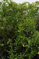

Common name in Tamil : Kakandam
Common name in Telugu : Kandilla, Vurada, Vurudu
Common name in Singhalese : Malkadol



Diagnostic characters
Botany & morphology
Regeneration
Reproductive biology
Ecology
Distribution
Uses
A tall buttressed tree; bark smooth, grey with few lenticels; older branchlets with leaves scars; roots with numerous knee like pneumatophores. Leaves oblanceolate, coriaceous. Flowers whitish green; fruits are viviparous with reflexed calyx.
Leaves simple and entire, opposite, elliptic, with a bluntly pointed apex and cuneate base, 7 - 17 x 2 – 8 cm, coriaceous; petiole generally green, 4 cm long.
Inflorescence usually 3 – 5 flowered, peduncle about 1 cm long.
Flowers small, regular, 1 - 1.5 cm long, whitish green; calyx lobes 8, about as long as tube; petals 8, shortly bilobed with 2 or 3 bristles at the apex of each lobe; stamens 18 - 20, filaments filiform, anthers linear; ovary inferior, 2 – 4 celled, style filiform, stigma 2 - 4 lobed.
Fruits 1-seeded, indehiscent, coriaceous; calyx persistent, reflexed; hypocotyle 10 to 14 cm long, cylindrical, obscurely ribbed and slightly curved towards apex.
Roots horizontal and forms knee-like loops above the substrate.
Fruit remains attached to the seedling and dispersed with it. Germination modified epigeal, vivipary.
Pollination by butterflies and insects; pollen release by explosive mechanism, which is triggered by visiting pollinator.
Common along estuarine mouths in the mangrove forests, often growing immediately behind Avicennia marina communities.
India, Sri Lanka, South East Asia and Australia. In India it is distributed in west Malabar coast and east coast and Andaman islands.
Potential source of timber for poles, fuel and tanin. Bark used as condiments.
Top of the page